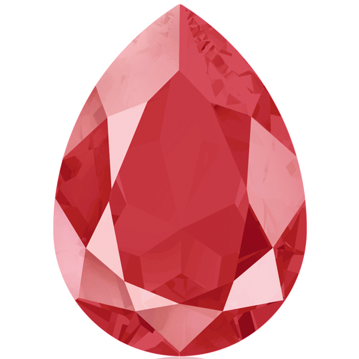
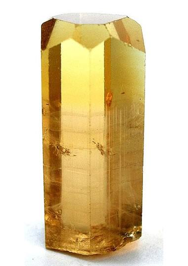
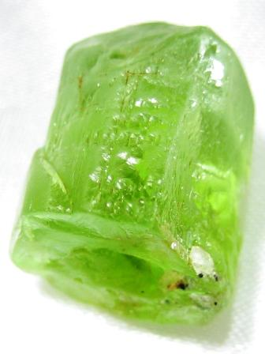

Crystals Collector!
You will be given a random number at the start of the game.
There are four crystals below. By clicking on a crystal, you will add a specific amount of points to your total score.
You win the game by matching your total score to a random number, you lose the game if your total score goes above the random number.
The value of the crystal is hidden from you. You'll have to figure it out by watching how much your score goes up.
Each time when the game starts, the game will change the value of each crystal.
0
Wins: 0
Losses: 0




Your total score is:
0